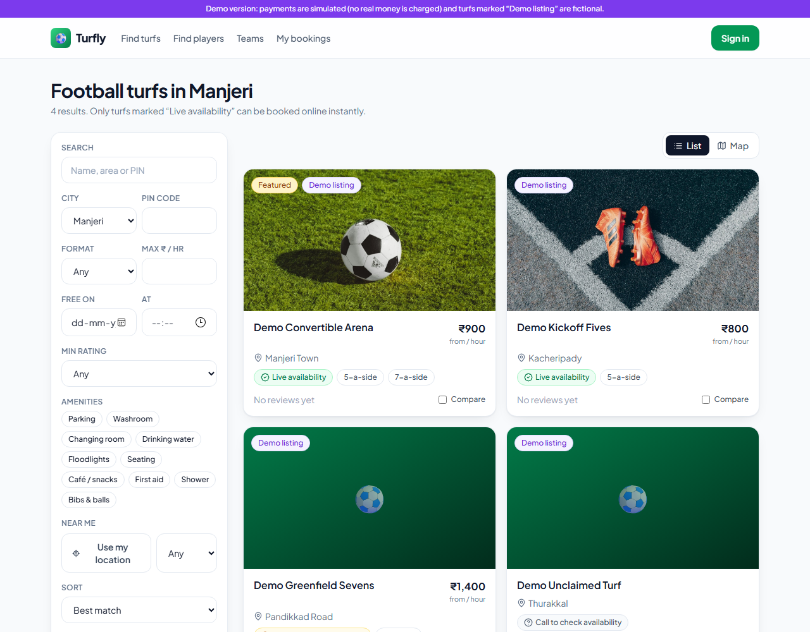
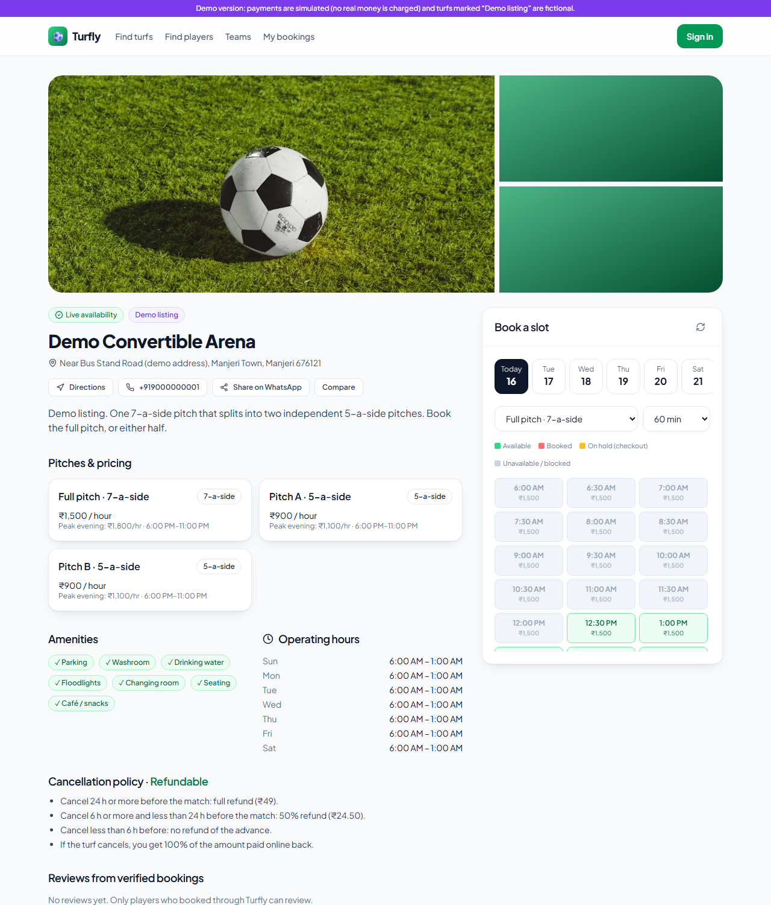
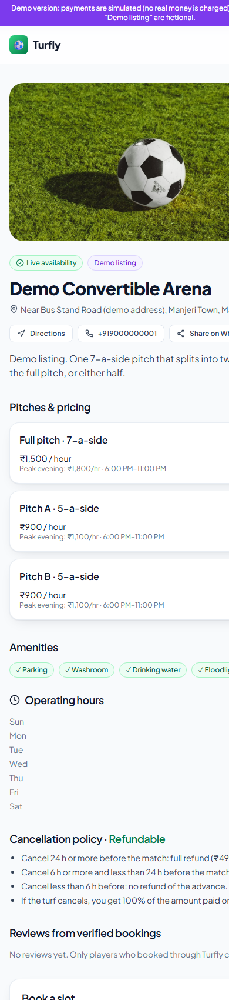

Football turf discovery, team management & booking, starting in Manjeri, Kerala
A guide for players, turf owners and the platform administrator: what each screen does, the booking and payment rules, how the convertible 7-a-side pitch works, and how the app is hosted and taken live.
Version0.1 (demo)
Date16 November 2026
Source codegithub.com/arjungopinath310-ai/turfly
Contents
1 Turfly in one page
2 Getting started & demo accounts
3 Player guide: finding a turf
4 Player guide: booking & paying
5 After booking: squad, sharing, cancelling
6 Teams, Find Players & Compare
7 The convertible 7-a-side pitch
8 Turf owner guide
9 Administrator guide
10 Money: advance, fees, commission
11 Notifications & reminders
12 Safety, privacy & honesty rules
13 How it is hosted today
14 Going live checklist
15 Technical overview
16 What is planned next
1 · Turfly in one page
Turfly lets football players find turfs near them, see which time slots are free, reserve a slot by paying a small online advance (₹49 by default) and pay the rest at the venue. Teams, squads and WhatsApp sharing are built in. Turf owners run their whole calendar on Turfly (online bookings, walk-ins, maintenance blocks, prices) and a platform administrator approves turfs and manages money and disputes.
Players
Search by area, PIN, distance, price, format, amenities, rating, free time
Live colour-coded slot grid
Reserve with ₹49, pay rest at turf
Teams, squads, WhatsApp invites
Reviews, Find Players, Compare
Turf owners
Register or claim a listing
Pitch layout incl. 7s ↔ 2 × 5s
Peak pricing, hours, durations, refund policy
Day / week / month calendar
Walk-ins, blocks, balances, analytics
Administrator
Approve / reject / suspend turfs
Add unclaimed listings, verify claims
Users & roles
Payments, refunds, disputes
Advance, fees, commission, offers
Three promises the app keeps: (1) two people can never book the same pitch at the same time; the database itself refuses it. (2) A booking is confirmed only when the payment gateway confirms the money, never because the browser says so. (3) Availability is labelled honestly: “Live” only when the owner manages bookings on Turfly.
2 · Getting started & demo accounts
Open the Turfly address in any browser, on a phone or a computer. No app install is needed.
Tap Sign in and enter a 10-digit Indian mobile number. Turfly sends a 6-digit OTP.
On first sign-in you are asked for your name, so teammates and turf owners see a person, not a number.
Sign-in screen. In demo mode the OTP is displayed on screen because SMS sending is not connected yet.
Demo mode
Until SMS and Razorpay accounts are connected, Turfly runs in demo mode. A purple banner at the top of every page says so.
OTP on screen: ordinary players see their code on screen. Admin and real turf-owner accounts never do; their code is printed only in the server window of the person running Turfly. A stranger therefore cannot sign in as the administrator.
Simulated payments: checkout shows a “Simulate successful UPI payment” button instead of Razorpay. It runs the same confirmation code as a real payment, but no money moves.
Demo listings: the seeded turfs are fictional and labelled “Demo listing”. Real Manjeri turfs are added by the admin or registered by their owners.
Demo accounts
Role
Mobile number
Where the OTP appears
Demo player
90000 00002
On screen
Demo turf owner (owns the demo turfs)
90000 00001
On screen (demo turfs only)
Administrator
The numbers listed in ADMIN_PHONES (yours, plus the seeded 99999 99999)
Server window only
Any new number
Any valid mobile
On screen (creates a new player)
Limits that protect sign-in: a code is valid for 5 minutes, allows 5 attempts, can be requested at most 5 times an hour and once every 30 seconds, and works only once.
3 · Player guide: finding a turf
Home page: search by name, area or PIN, pick a format, or tap a quick chip (“Tonight 7 PM”, “5-a-side”, “Floodlit + parking”).

Results: filters on the left, list / map toggle, an availability badge on every card and a “Compare” tick box.
Filters
Filter
What it does
Search / City / PIN code
Matches turf name, locality, address or exact PIN
Format
Only turfs offering 5-a-side or 7-a-side
Max ₹ / hr
Turfs whose cheapest matching pitch is within budget
Free on … at …
Only turfs with a free slot at that date and time. Uses Live turfs only, because others can’t be trusted
Min rating · Amenities
Rating from verified bookings; parking, washroom, floodlights, etc.
Near me + radius
Uses your phone’s location (only after you tap the button) and sorts by distance
Availability badges
Live availability the owner manages every booking here; slots are accurate and bookable online.
Owner-reported the owner updates manually; the grid is shown with its last-updated time, but you must call to book.
Call to check availability no calendar connected (e.g. an unclaimed listing); only contact details are shown.
4 · Player guide: booking & paying

Turf page: photos, pitches & peak prices, amenities, hours, refund policy, reviews, and the “Book a slot” panel (right).
The eight booking steps
Choose the turf (locality is chosen in search)
Pick a date from the strip (up to 30 days ahead)
Pick the pitch: Full 7-a-side, Pitch A or Pitch B
Pick the duration: 60, 90 or 120 minutes
Tap a green slot: the price (incl. peak ★) is on the slot
Choose a team, or create one, or decide later
Optional: offer code, or “pay full online” if allowed
Tap Reserve · pay ₹49
Slot colours
Green available Red booked Amber held by someone in checkout Grey past, too soon, or blocked by the owner
The grid refreshes every 20 seconds. If your chosen slot is taken meanwhile, Turfly tells you and clears the selection.
Price breakdown (shown before paying)
Turf booking
₹1,500
Online advance (pay now)
₹49
Balance at venue
₹1,451
Any platform fee is a separate, visible line. Offer discounts reduce the venue balance, never the ₹49.
Checkout: what happens behind the button
HoldSlot locked for you for 5 min (amber for others)
→
PayUPI, card, net banking or wallet via Razorpay
→
Gateway confirmsRazorpay’s signed message reaches Turfly
→
ConfirmedBooking ID e.g. TF-EYBY9Q, notifications sent
A countdown shows how long the hold lasts. If you leave or the payment fails, the slot frees itself when the hold expires. You can also tap “Cancel and release slot”.
If a payment arrives just after the hold expired, Turfly re-books the slot if it is still free; if someone else took it, the money is refunded automatically in full.
Paying twice by accident (two tabs) is detected and the extra payment refunded automatically.
You can hold at most 2 slots at a time, so nobody can block a whole evening.
5 · After booking: squad, sharing, cancelling
The booking page (My bookings → tap a booking) shows the booking ID, date, time, pitch, what was paid and the balance due, plus:
Share & plan
Directions opens Google Maps navigation
Google Calendar / .ics file for any calendar app
Share on WhatsApp sends match details from your own WhatsApp
Receipt printable / save as PDF
Match squad
Team name for this match (can differ from the team’s usual name)
Add players by name or from your team
Mark each Confirmed / Pending / Declined
Set captain and substitutes
Players don’t need an account
Cancelling and refunds
Each turf has a refund policy that is shown in plain words before you pay and saved with your booking (later policy changes don’t affect you). Tap Check refund & cancel to see the exact amount before confirming. Default policy:
When you cancel
Refund of the ₹49 advance
24 hours or more before the match
100% (₹49)
6 to 24 hours before
50% (₹24.50)
Less than 6 hours before
No refund
The turf cancels
Always 100% of what you paid online
Reviews & problems
After the match, the organiser can rate turf quality, cleanliness, lighting, parking and overall experience. Only verified bookings can review, once per booking. Report a problem opens a dispute that the administrator resolves, with a refund if appropriate.
Short of players?
From an upcoming booking, post “Need 3 more players”. It appears in Find Players; see section 6.
6 · Teams, Find Players & Compare
Teams
Create a team: name, logo (resized automatically), 5-a-side or 7-a-side.
Add players: full name, and optionally mobile, email, position, jersey number and photo.
Edit, replace or remove players; make anyone captain.
Rename the team at any time. Renames, joins and removals are kept in Team activity, and past matches in Match history.
Invite with a link or a WhatsApp message. Players who open the link and sign in join automatically.
Choose an existing team (or create one) while booking; its players are copied into the match squad.
Privacy: a player’s phone number is visible only to the person who entered it (the team owner), unless that player switches on “Share my phone number with my teammates” in their profile. Everyone else sees names only.
Find Players
An organiser posts from a confirmed booking: players needed, optional share per player and note.
Other players see open posts for their city and tap Request to join.
The organiser accepts or declines. Accepted players are added to the squad by name, and the post closes when full.
Any share amount is paid to the organiser at the venue. In-app split payments are planned (section 16).
Compare turfs
Tick Compare on up to three turfs, then open the comparison: location, distance, availability type, formats, starting price, rating, free slots today, and every amenity side by side.
On a phone

Every screen adapts to phone width. The navigation moves into the account menu, and the booking panel stacks below the turf details.
7 · The convertible 7-a-side pitch
The facility has one 7-a-side pitch that can also be used as two independent 5-a-side pitches. Turfly models the ground as areas and bookable pitches:
Bookable pitch
Uses areas
Full pitch · 7-a-side
A + B
Pitch A · 5-a-side
A
Pitch B · 5-a-side
B
One rule decides everything: two bookings clash only if they share an area and their times overlap.
If someone books…
Full 7-a-side
Pitch A
Pitch B
Full 7-a-side
booked
unavailable
unavailable
Pitch A
unavailable
booked
available
Pitch B
unavailable
available
booked
Pitch A and Pitch B
unavailable
booked
booked
Overlapping times are checked minute by minute, never merged
Example: Pitch A booked 6–7 PM and Pitch B booked 7–8 PM.
The full pitch is unavailable 6–8 PM because in each of those hours one half really is in use. But the two bookings are not treated as one big block: the full pitch stays bookable at 5 PM and 8 PM, Pitch A is still free 7–8 PM and Pitch B is free 6–7 PM.
Owner options
Halves can be combined into one 7-a-side booking: on by default; off removes the Full pitch option.
Both halves can run at the same time: on by default; off adds a hidden shared “lock” so only one half is used at a time.
Any other layout is possible (three 5s pitches merging into an 11s, extra pitches, etc.). The settings page shows a conflict map of which pitches block each other.
8 · Turf owner guide
Getting listed
Register: Account menu → List your turf. Enter name, address, PIN, map coordinates, contact, photos, amenities, and choose a layout (convertible 7s ↔ 2 × 5s, single 5s, or single 7s) with prices.
Or claim: if the admin already listed your turf, open the claim link they send, sign in and describe how you can be verified (role, GSTIN or licence). The admin confirms by calling the listing’s public number.
Review pitch layout, hours, peak prices and refund policy, then Submit for approval. Customers can book once the admin approves.
Turf settings
Section
What you control
Status & availability
Live (you enter every booking here, including walk-ins; customers book online) or Owner-reported (grid shown, customers call)
Pitch layout
Areas, bookable pitches, players per side, base price, conflict map, one-click convertible preset
Peak pricing
Time windows and days with their own hourly rate; prices are prorated per 30 minutes across a boundary
Operating hours
Per weekday, including closing after midnight (e.g. 6 AM to 1 AM)
Cancellation policy
Up to three refund tiers or non-refundable; applies to new bookings
Details & rules
Slot interval (15/30/60 min), durations (30–180 min), minimum notice, days bookable ahead, optional full online payment
Daily operation
Calendar
Day: every pitch as a colour grid plus the list of bookings and blocks
Week: bookings per pitch per day
Month: booking heat-map, blocked days
Walk-in / phone booking: appears online instantly; refused if it clashes with anything
Block time: maintenance, private event or holiday, for one pitch or the whole turf, over several days if needed
Bookings
Tabs: Upcoming, Balance pending, Past, Cancelled; search by ID or name
Customer, team and squad details
Mark balance collected at the venue
Reschedule (checked for clashes; customer notified)
Cancel & refund (always 100% of the online payment)
Mark no-show
Dashboard
Today’s bookings · upcoming count · free 1-hour slots today · bookings this month (and how many were walk-in/phone) · booking value · advances received · pending balances · cancellations and rate · peak booking hours chart (last 90 days) · settlement ledger.
9 · Administrator guide
Page
What the admin does there
Overview
Users and owners, live / unclaimed / draft turfs, items awaiting review, open disputes, bookings and booking value this month, money collected and refunded, commission earned, latest bookings, bookings by city
Turfs & claims
Approve or reject new turfs (a reason is required to reject); suspend or reinstate; set per-turf commission % and “featured”; add unclaimed listings from public information with a source note; copy each listing’s claim link to invite the owner; approve or reject ownership claims
Payments & disputes
Search payments by booking ID or gateway ID; refund any amount; resolve disputes with or without a refund; see failed or invalid gateway messages
Advance per booking (default ₹49), platform fee to customer (default ₹0), checkout hold minutes (default 5), default commission % (default 0), default refund policy, which reminders to send and by which channels, integration status, and promo codes
Offers
Codes can be platform-wide or for one turf; a percentage (with optional maximum) or a flat amount; with a usage limit and an end date. Types: First booking, Repeat customer (after N bookings), Referral and Promo. Every user has a referral code on their profile. The seed includes WELCOME50: ₹50 off a first booking, taken off the venue balance.
Adding real Manjeri turfs
Use only public information: the name on the signboard, the address, the public phone number and the map location. Record the source in the note.
The listing appears with “Call to check availability”; it never shows slots.
Send the owner the claim link from the table. After verification the listing becomes theirs to set up.
Every sensitive admin and owner action (approvals, refunds, role changes, settings, manual bookings, reschedules) is recorded in an audit log.
10 · Money: advance, fees, commission
Item
Who pays / receives
Rule
Advance (₹49)
Customer pays online
Part of the turf price, not extra. Configurable by admin; never more than the slot price
Balance
Customer pays at the turf
Owner marks it collected; reminder sent if still pending
Platform fee
Customer, optional
Default ₹0. If set, shown as its own line before payment
Discount
Customer saves
Reduces the venue balance only; the advance stays the same
Commission
Charged to the owner
% of booking value, per turf or platform default (0%). Shown as a separate ledger line; never silently taken from the advance
Full online payment
Customer, optional
Only if the owner enables it; balance becomes ₹0
Settlement ledger (owner dashboard)
Entry
Example
Advance collected by platform
+ ₹49
Commission (if configured, e.g. 5% of ₹1,500)
− ₹75
Refund to customer
− ₹49
Payout to owner (when paid)
− amount paid out
The advance is collected into the platform’s Razorpay account and paid to owners from the ledger. Automatic split settlement (Razorpay Route) is a planned upgrade.
Payment methods
UPI, debit and credit cards, net banking and supported wallets, all through Razorpay Checkout. The amount is always calculated on the server from the booking, never taken from the browser.
11 · Notifications & reminders
Message
When
Contents
Booking confirmed
Immediately after payment
Turf, location, date & time, pitch, team, booking ID, amount paid, balance, directions, cancellation policy
Reminder
24 hours before
Turf, time, booking ID, directions
Reminder
2 hours before
Same
Balance pending
3 hours before, only if unpaid
Amount due at the turf
Changes
When it happens
Cancellation by turf, reschedule, refund, team join, Find Players requests, turf approval
Channels: in-app (the bell icon, always on), SMS (MSG91), WhatsApp (WhatsApp Business Cloud API) and email (Resend). Each external channel switches on when its keys are added; until then the message is written to the server log. The admin chooses which reminders and channels are used.
The scheduler: the “Turfly reminders” window calls Turfly once a minute to send due reminders, release abandoned holds and mark finished matches as completed (which unlocks reviews). Holds are also released automatically whenever someone looks at availability, so bookings stay correct even if the scheduler is off.
12 · Safety, privacy & honesty rules
Booking integrity
The database refuses any two active bookings, holds or blocks that use the same area at overlapping times, even if requests arrive in the same millisecond. Tested with 10 simultaneous attempts: exactly one wins.
Walk-ins, phone bookings, blocks and reschedules go through the same check.
Times are stored in UTC and shown in Indian time.
Payments
Only Razorpay’s signed webhook can confirm a booking; the signature is verified with a secret key.
Each gateway message is processed once, even if Razorpay sends it again.
Duplicate and late payments are refunded automatically.
Simulated payments are switched off automatically as soon as Razorpay keys are added.
Privacy
Phone numbers of team members are private by default.
WhatsApp invites are sent from the organiser’s own phone; Turfly needs nobody else’s number.
Find Players shares names, not numbers.
Location is used only after the player taps “Use my location”.
Honesty
“Live availability” only where the owner runs bookings on Turfly.
No scraping of other booking systems; unclaimed listings use public information with a recorded source.
Demo data is labelled as demo.
Refund rules are shown before payment and frozen with the booking.
Accounts
Admin and real owner codes are never shown on screen.
Suspended users cannot sign in.
Every owner/admin action re-checks permissions on the server.
13 · How it is hosted today
Turfly currently runs on your Windows PC and is reachable from any device on the internet through a Cloudflare Tunnel. Cloudflare gives the PC a public https://…trycloudflare.com address without opening router ports or exposing your home IP.
Start the tunnel and copy the new https://….trycloudflare.com address it prints.
Put that address in .env as both APP_URL and NEXTAUTH_URL.
Start the server (npm.cmd start) and the reminders loop. After code changes, run npm.cmd run build first.
Limits of this setup: the site is only up while the PC is on, awake and online; the free “quick tunnel” address changes every time the tunnel restarts and has no uptime guarantee. It is ideal for demos and testing with friends and turf owners. For real customers, use permanent hosting (section 14).
Useful commands
npm.cmd run db:migrate
Apply database changes
npm.cmd run db:seed
Load demo data (skips if already present)
npm.cmd test
Engine tests (slot, pricing, refund rules)
npm.cmd run test:integration
Database tests (double booking, payments)
14 · Going live checklist
#
Step
Why
1
Permanent hosting: e.g. Vercel or Render for the app, plus a managed PostgreSQL (Neon, Supabase, AWS RDS), and your own domain
Always on, fixed address, backups
2
Razorpay account (KYC approved). Add key ID, key secret and webhook secret; set the webhook to /api/payments/webhook with events payment.captured, payment.failed, order.paid, refund.processed, refund.failed; enable auto-capture
Real UPI / card payments and refunds
3
MSG91 with DLT-registered SMS templates (OTP and booking messages)
OTP by SMS; turns off on-screen codes
4
Set DEMO_MODE=false and OTP_DEV_ECHO=false
Removes demo banner, on-screen OTP and simulated payments
5
Optional: WhatsApp Business Cloud API templates and Resend email
Confirmations and reminders on WhatsApp / email
6
Optional: Google sign-in client ID and secret
“Continue with Google” button
7
A scheduler calling /api/cron/tick every minute with the cron secret
Reminders and housekeeping
8
Remove or hide demo turfs; add real Manjeri turfs as unclaimed listings and send claim links
Real content
9
Publish terms, privacy policy and the refund policy page
Required by Razorpay and app users
All keys go in environment variables (see .env.example); nothing secret is stored in the code or on GitHub.
15 · Technical overview
Layer
Technology
Web app
Next.js 14 (React 18, TypeScript): pages, API routes and server actions in one project
Design
Tailwind CSS, Lucide icons, Leaflet + OpenStreetMap map, Google Maps links for directions
Database
PostgreSQL 16 with Prisma; money stored as whole paise; times in UTC
Sign-in
NextAuth: mobile OTP (+ optional Google), 30-day sessions
Payments
Razorpay Orders + Checkout + signed webhooks; simulated gateway in demo mode
Messaging
Job queue in the database; MSG91, WhatsApp Cloud API, Resend adapters
Main data
City → Turf → Areas & Pitches (+ pricing rules, hours) · Booking → Occupancy rows (one per area used, the double-booking guard) → Payments → Refunds · Team → Members · Match squad · Reviews · Player posts · Offers · Ledger · Notifications · Disputes · Audit log · Tournament tables (prepared).
Booking life cycle
HELD5-minute hold
→
CONFIRMEDwebhook verified
→
COMPLETEDafter the match
Side paths: HELD → EXPIRED (not paid in time) or CANCELLED (abandoned); CONFIRMED → CANCELLED (with refund per policy) or NO_SHOW.
Quality checks run
20 engine tests: slot conflicts incl. the 6–7 / 7–8 PM case, peak pricing, ₹49 maths, refund tiers, Indian time.
9 database tests: 10 simultaneous bookings (one wins), full vs half at once, blocks, duplicate and invalid webhooks, late payment re-booking and refund, time-zone safety.
End-to-end test through the public address: sign-in, profile, booking, payment, confirmation.
Further technical detail: docs/ARCHITECTURE.md and docs/ASSUMPTIONS.md in the repository.
16 · What is planned next
Feature
Status today
Next step
Tournaments: registration, entry fees, fixtures, knockout & league, results, leaderboards
Database tables ready
Organiser and public tournament pages
Split payments: teammates contribute online
Not built
Per-player payment links; booking still confirmed by the organiser’s advance
Open matches with per-player online payment
Find Players built (share paid at venue)
Pay-to-join checkout per seat
Match statistics: results, goals, assists, player of the match, win/loss
Database fields ready
Optional entry form after a match
Loyalty points / memberships
Referral codes and first-booking / repeat offers built
Points ledger and redemption
Automatic owner settlement
Ledger built
Razorpay Route linked accounts
Owner subscriptions, featured placement billing
“Featured” flag built
Razorpay Subscriptions
Android / iOS apps
Website works on phones
Native apps on the same back end
Need help? The source code, setup steps and technical documents are in the GitHub repository arjungopinath310-ai/turfly.